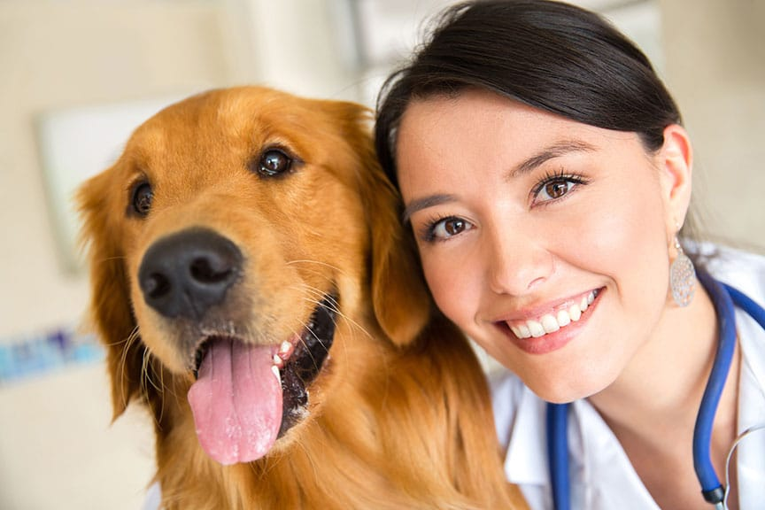
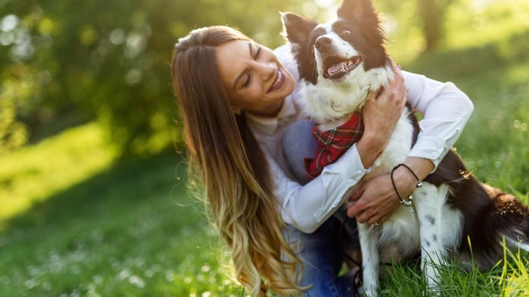

Nuestro equipo
Contamos con un increíble plantel, dedicado a las salud, bienestar y apoyo de los domésticos que necesitan de un hogar, ya sea transitorio o permanente. Ellos te acompañaran en el proceso de encontrarte con tu nuevo mejor amigo
Vet. Marisa Onetto
Siempre con una sonrisa y dispuesta a responder hasta tus consultas mas descabelladas. Estará siempre atenta durante el dia y las guardias 24/7.
Vet. Pedro Lozada

Veterinario con años de experiencia y un corazón de oro. Se encargara de que tus mascotas estén sanas, felices y agradecidas.
Mariano Urrutia
El peluquero preferido de todos los peludos!!! Para esas mascotas mas coquetas e influencers, el toque extra de amor que necesitan.
Agustina Asencio

Vendedora de lujo, mejor persona. Asesoramiento personalizado, en todos los productos que necesites para tu compañero.
Marisa Aguilar
Cuidadora y asesora personalizada. Te acompañara a conocer a todos los hermosos peludos del lugar, asi como enseñarte a cuidar personalmente de ellos.
Isabel Paredes
Desde hace mas de 4 años nos acompaña y asiste en el cuidado de todos nuestros refugiados. Siempre te va a recibir con la mejor actitud y los mejores consejos